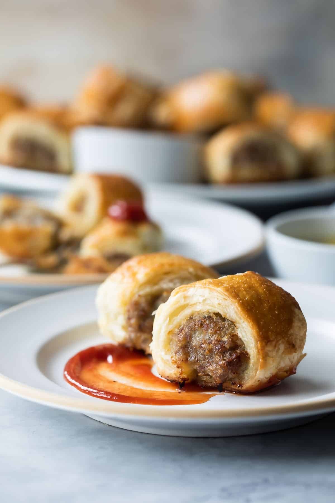

Sausage rolls

Description
These bite-sized sausage rolls are especially fabulous still warm from the oven. And while you can dress them up any way you see fit,
by adding cheese, herbs, or chopped mushrooms—you don’t have to. They taste great as is!
Ketchup is the traditional dipping sauce, but by all means, make Marinara Dipping Sauce if you gotta have it. This recipe is suitable for freezing.
Ingredients
- 1 Tbs Olive or Vegetable oil
- 1 Small Onion finely chopped
- 1 Tbs Fresh Sage Leaves, or 1/2 Tsp Ground Dried
- 2 Large Eggs, Divided
- Salt and Pepper
- All Purpose Flour For Rolling Out Pastry Dough
- 1 Box Frozen Puff Pastry, Thawed
Steps
- Preheat oven to 200C degrees. Line two baking sheets with foil or parchment paper and lightly coat with non-stick cooking spray. Set aside.
- In a medium skillet over medium-high heat, heat olive oil until shimmering. Add onion and cook, stirring occasionally, until onion begins to lightly brown, about 5 to 7 minutes. Transfer to a medium mixing bowl.
- Lightly dust a clean surface with flour. Using a sharp knife, cut each sheet of puff pastry in half to form long strips. Refrigerate pastry until ready to form rolls.
- To the bowl with the cooked onion, add uncooked sausage, sage, 1 egg, ½ teaspoon salt, and ¼ teaspoon freshly ground black pepper. Mix until well-combined.
- Form ¼ of the sausage mixture into a log shape down the center of one pastry rectangle (lightly dampen hands if sausage mixture becomes sticky or difficult to form). Repeat with remaining sausage and puff pastry.
- In a small bowl, whisk 1 egg until beaten. Using a pastry brush, lightly brush the edges of each sheet. Fold the pastry over the sausage filling to form long rolls. Flip the sausage rolls over so they are seam-side-down.
- Using a sharp knife, cut rolls into pieces about 1 1/2-inch in size and evenly arrange pieces on prepared baking sheets seam-side down (if rolls are difficult to cut, return to the refrigerator and chill). Brush the top of each roll with egg wash.
- Place sheets in oven and bake until rolls become golden brown, about 20 minutes. Rotate sheets after 10 minutes of baking to ensure even coloring on rolls. Serve immediately warm or at room temperature.